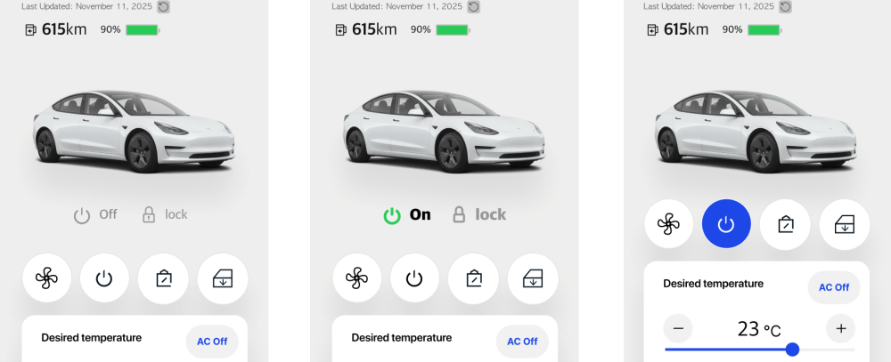

다산디엠씨는 글로벌 자동차 OEM의 Tier1 업체로서 다양한 자동차 부품을 생산, 공급하고 있습니다.
오토사업부는 미래차에 필요한 차량용 솔루션을 개발하고 있습니다.
🚗 미래 자동차의 혁신
요즘 자동차는 서버 기능이 포함된 온라인 기기로 출시가 됩니다.
- 엔진체크등에 불이 들어오면, 플랫폼이 고장정보를 이미 알고 대처해줍니다.
- 사고가 나면 위치, 운전자 상태 등을 인지하여 응급센터에 알려줍니다.
- 차키 없이 앱으로 문을 열고 시동까지 걸 수 있습니다.
- 가족들끼리 디지털키를 공유하고, 만료기한을 정할 수 있습니다.
이렇게 상상하기만 했던 기능들이 하나둘씩 구현되고 있죠.
이제 자동차 기업들은 더 이상 네트워크가 없는 제품을 만들지 않습니다.
최근 커넥티드카 시장의 진화에 발맞추어 함께 일할 동료를 다음과 같이 모집하고자 합니다.
📋 모집분야
1. 커넥티드카 개발자
기술연구소에서는 자동차가 온라인과 결합하기 위한 텔레매틱스 플랫폼의 미들웨어 기능을 개발합니다.
최소 3년차 이상에 10년차까지 텔레매틱스 업무 경험자를 찾고 있습니다.
(1) 미들웨어 부문
업무 분야
- MQTT 기반의 IoT 및 차량 통신 기술 (Mediation 서버) 개발 및 운영
- IoT 및 차량 Protocol 생성 및 테스트기능 구현 및 운영
- IoT 및 차량 Protocol 시뮬레이터 개발 및 운영
요구 기술
Java Springboot
PostgreSQL
MySQL
Netty
Node.js
MQTT
Prometheus
Grafana
(2) 서비스 부문
업무 분야
- 자동차 및 운전자 대응을 위한 고객센터 서비스 개발 및 운영
- 커넥티드카 제어 및 상태조회를 위한 웹앱 서비스 개발, 운영
- 자동차 수집 데이터를 정제, 가공, 제공하기 위한 API 서비스 개발, 운영
사용 기술
Spring Boot
Node.js
Python
Vue.js
React
Apache Flink
2. 커넥티드카 서비스 운영 담당
혁신적인 커넥티드카 서비스가 멈추지 않고 안정적으로 사용자에게 제공될 수 있도록 관리하고 운영할 전문가를 모십니다.
서비스운영팀 운영기획 담당
주요업무
- 커넥티드카 서비스 전반(Operation)의 안정적 운영 및 품질 관리
- 고객문의 및 VoC 대응 프로세스 운영 및 개선
- 서비스 장애 모니터링 및 이슈 대응, 리스크 관리
- 운영 지표 (KPI, SLA 등) 수립 및 정기 리포트 발행
- 서비스 품질 향상을 위한 데이터 분석 및 인사이트 도출
- 유관 부서 및 관계사 등과의 운영 협업 및 커뮤니케이션
- 운영 정책, 매뉴얼, CS가이드 라인 수립
업무 및 기술 경험
- 모빌리티/커넥티드카/통신 관련 서비스 운영기획 경력 3년 이상
- VoC 관리, 운영 정책 수립 및 리스크 관리 경험
- 업무 기획 및 설계를 위한 관련 툴 및 문서 작성 역량 필수
- 데이터분석을 활용한 리포트 작성 가능자 (데이터 시각화, 보고서 작성)
- 프로젝트 협업 및 커뮤니케이션 능력 우수자
우대사항
- OKR 기반 프로젝트 관리 및 실행 경험자
- 일본어 커뮤니케이션 가능자
- JSM (Jira Service Management), Confluence 등 협업 / 운영 툴 활용 경험
📍 근무 정보
근무장소
서울 성동구 왕십리로 58 포휴 (서울숲역 수인분당선)
🔄 채용절차
서류면접
실무면접(1차)
임원면접(2차)
연봉협상
입사
💡 기타사항
수시채용으로 채용시점까지 공고는 오픈됩니다.
접수 후 일주일 이내 응답을 드립니다.